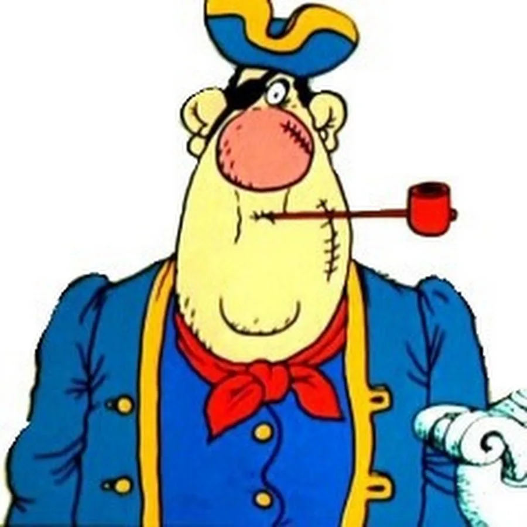
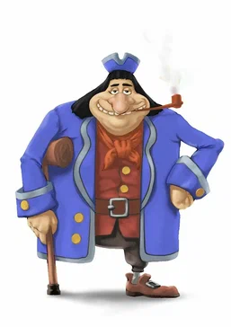
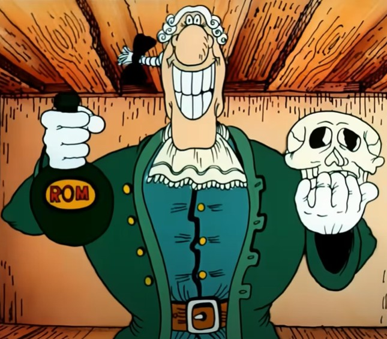

Билли Бонс
billi_b@tresureisland.com
01 апреля 1759 г.
Уильям «Билли» Бонс был первым помощником на корабле капитана Флинта. Наряду с «долговязым» Джоном Сильвером входил в число приближённых главаря.
|

Джон Сильвер
john_s@tresureisland.com
02 апреля 1758 г.
сильный, умный, хитрый пират, бывший соратник капитана Флинта, который в одном из морских сражений потерял ногу и затем осел на берегу. Однако сохранил влияние среди «коллег по грабежу» и не отказался от надежд и планов добраться до спрятанных на одном из тропических островов сокровищ.
|

Доктор Ливси
livci_doc@tresureisland.com
01 января 1755 г.
Известен своей обаятельной улыбкой.
Элегантный и всегда одетый в белый парик (потому что он не только врач, но и судья местного сообщества), доктор Ливси играет ключевую роль в получении сокровищ и помогает Джиму, главному герою, бежать от мстительных пиратов.
|